第04讲 一元一次方程的应用

课程标准 | 学习目标 |
①一元一次方程的应用的一般步骤 ②掌握各类应用题 | 1.掌握一元一次方程的应用的一般步骤； 2.掌握各类应用题的列方程的方法. |
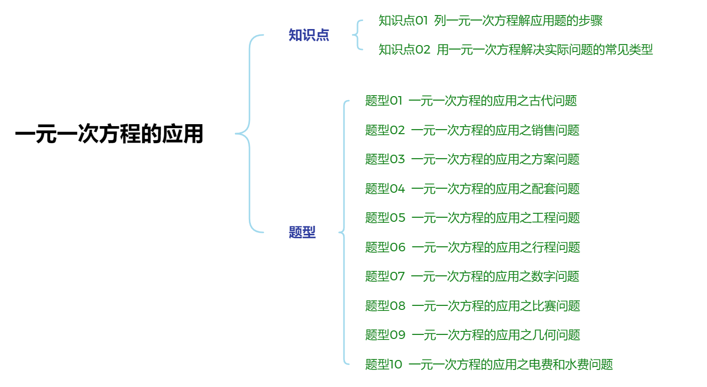

知识点01 列一元一次方程解应用题的步骤
①审：审题，分析题中已知什么，求什么，明确各数量之间关系
②设：设未知数（一般求什么，就设什么为x）
③找：找出能够表示应用题全部意义的一个相等关系
④列：根据这个相等关系列出需要的代数式，进而列出方程
⑤解：解所列出的方程，求出未知数的值
⑥答：检验所求解是否符合题意，写出答案（包括单位名称）
知识点02 用一元一次方程解决实际问题的常见类型
1.行程问题：路程＝速度×时间
2.顺水逆水问题：顺水速度=船速+水速；逆水速度=船速-水速
3.和差倍分问题：增长量＝原有量×增长率
4.利润问题：商品利润＝商品售价－商品进价
5.工程问题：工作量＝工作效率×工作时间，各部分劳动量之和＝总量
6.银行存贷款问题：本息和＝本金+利息，利息＝本金×利率×期数
7.数字问题：多位数的表示方法：例如：
【即学即练1】
1．（2024·安徽合肥·模拟预测）《九章算术》是中国传统数学最重要的著作之一，书中记载：“今有人共买羊，人出五，不足四十五；人出七，不足三，问人数、羊价各几何？”其大意是：今有人合伙买羊，若每人出五钱，还差四十五钱；若每人出七钱，还差三钱．问合伙人数和羊价各是多少？
【答案】21人，150元
【知识点】古代问题(一元一次方程的应用)
【分析】本题主要考查了一元一次方程的应用，找准等量关系、正确列出一元一次方程是解题的关键．
设合伙人数为x,根据“若每人出五钱，还差四十五钱；若每人出七钱，还差三钱”，
即可得出关于x的一元一次方程求解可得合伙人数，再将其代入
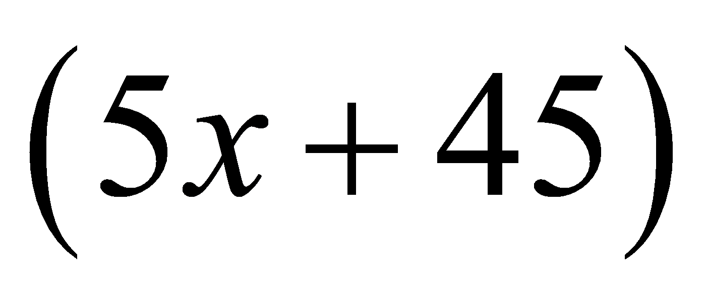
计算即可求出羊价．【详解】解：设合伙人数为x,
依题意得：
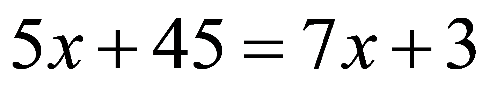
，解得：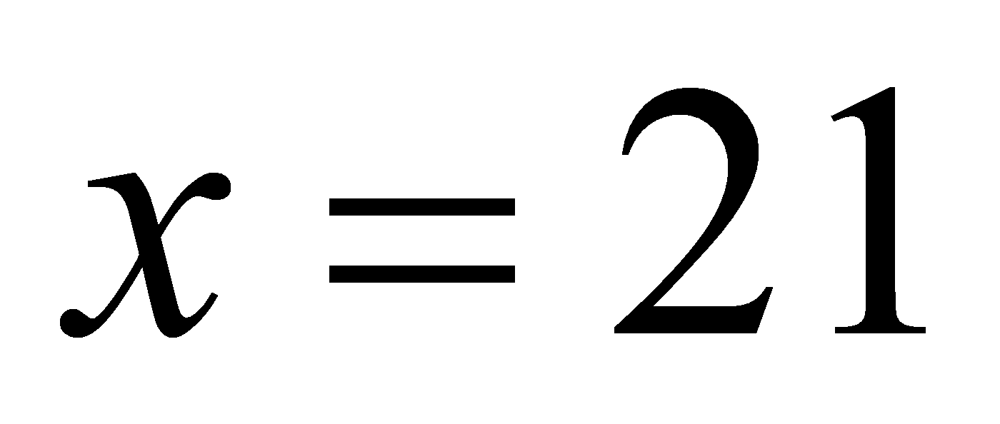
，则
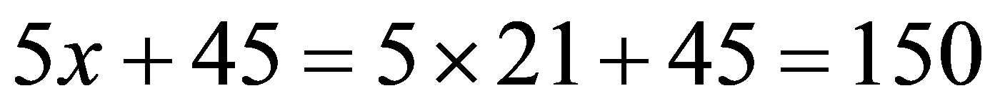
．答：合伙人数为21，羊价为150钱．
2．（23-24七年级下·黑龙江哈尔滨·开学考试）在元旦期间，我市某商场从厂家购进了甲．乙两种商品．若购进甲种商品5件，乙种商品4件，共需要800元：已知甲种商品每件的进价比乙种商品每件的进价少20元．
(1)求甲、乙两种商品每件的进价分别是多少元？
(2)该商场从厂家购进了甲．乙两种商品共40件，所用资金恰好为3440元．在销售时，甲种商品的售价为每件100元，乙种商品的售价为每件125元．求这40件的商品全部售出后可获利多少元？（获利=售价-进价）
【答案】(1)甲种商品每件的进价是80元，乙种商品每件的进价是100元
(2)这40件的商品全部售出后可获利860元
【知识点】销售盈亏(一元一次方程的应用)
【分析】本题考查了一元一次方程的实际应用，正确掌握相关性质内容是解题的关键．
（1）设甲种商品每件的进价是 元，则乙种商品每件的进价是
元，则乙种商品每件的进价是
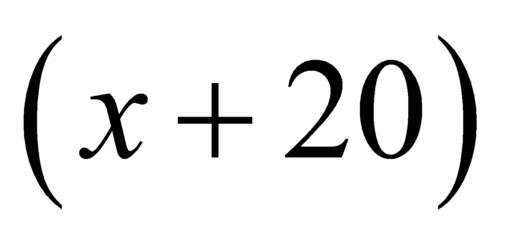
元，根据“购进甲种商品5件，乙种商品4件，共需要800元”列式计算，即可作答．（2）设购进了甲种商品 件，则乙种商品
件，则乙种商品
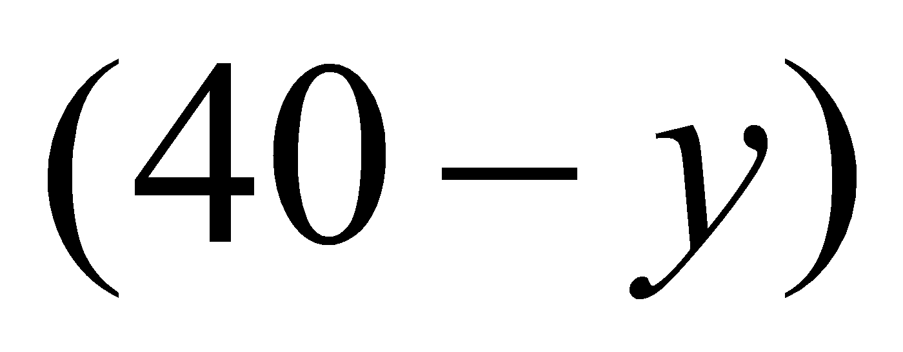
件，根据“甲种商品的售价为每件100元，乙种商品的售价为每件125元” 列式计算，即可作答．【详解】（1）解：设甲种商品每件的进价是元，则乙种商品每件的进价是元，
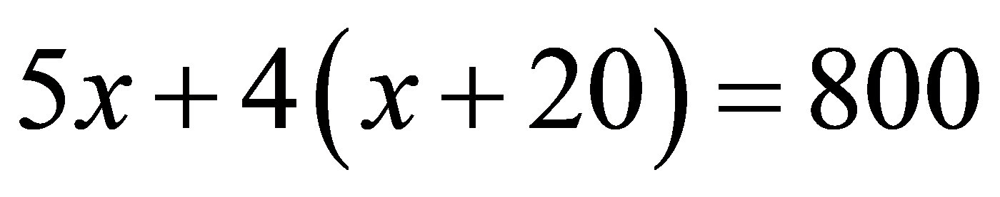
，解得 ，
，
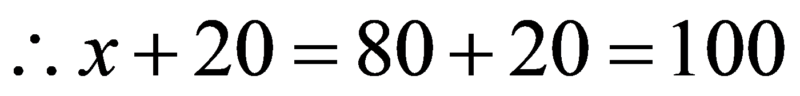
，答：甲种商品每件的进价是80元，乙种商品每件的进价是100元．
（2）解：设购进了甲种商品件，则乙种商品件，
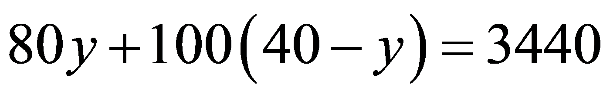
，解得
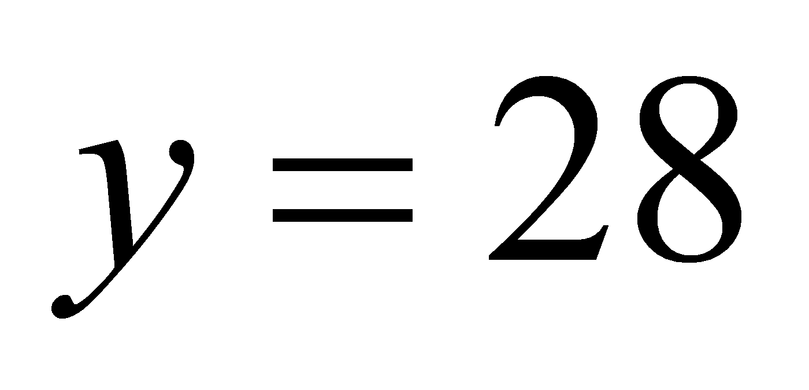
，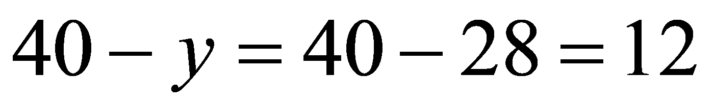
，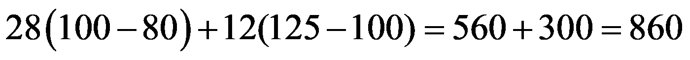
或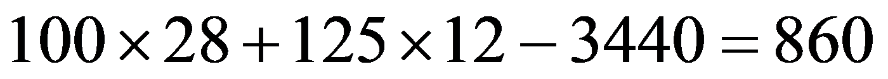
，答：这40件的商品全部售出后可获利860元．
3．（24-25七年级上·福建厦门·期中）为了鼓励居民节约用电，我省实行阶梯电价政策采取分段计费的方法按月计算每户家庭的电费，每两个月用电量与电费的单价如下表：
档次 | 电量范围 | 电费单价 |
第一档电费 | 340度及以下 | 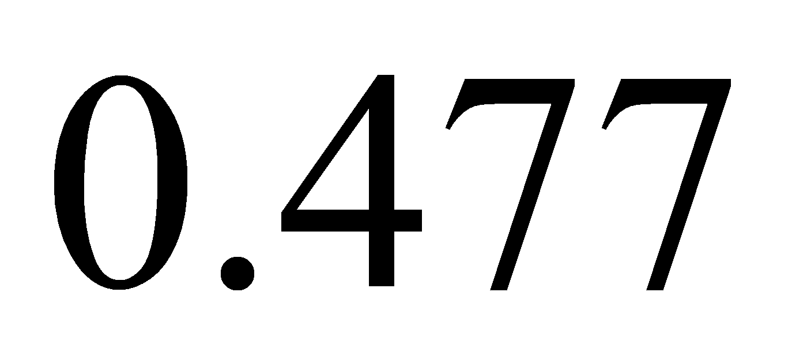 元 |
第二档电费 | 341度至520度 | 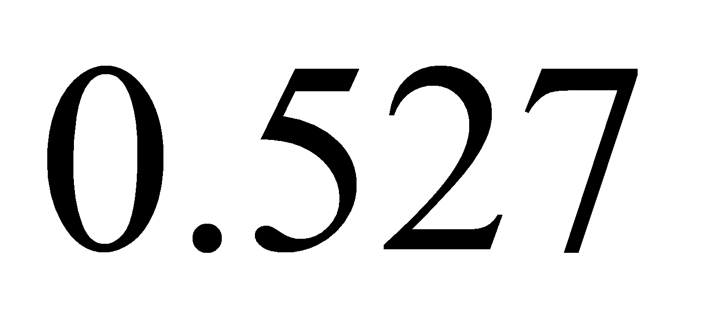 元 |
第三档电费 | 520度以上 | 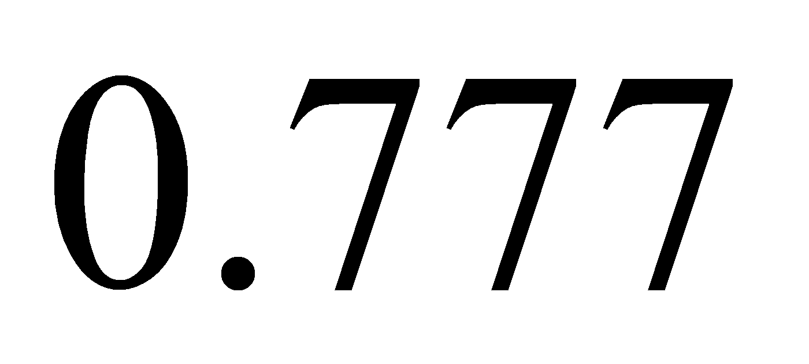 元 |
比如，若某户两个月用电200度，应缴电费 元；若某户两个月用电400度，应缴电费
元；若某户两个月用电400度，应缴电费
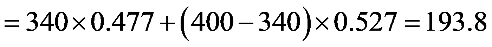
元；若某户两个月用电600度，应缴电费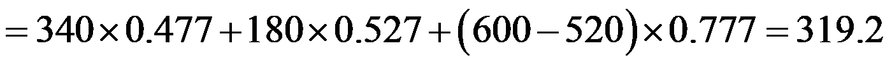
元．(1)小明家1、2月份共用电550度，则小明家这两个月应缴电费多少元？
(2)某用户两个月用电量为 度，用式子表示：
度，用式子表示：
当两个月用电量不超过340度时，应收电费 元；当两个月用电量超过340度但不足520度时，应收电费 元；当两个月用电量超过520度时，应缴电费 元．
(3)小丽家1、2月份应缴电费
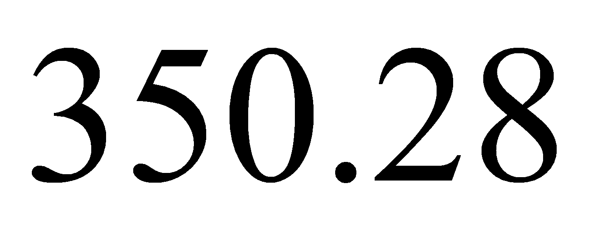
元，问小丽家这两个月共用电多少度？【答案】(1)小明家这两个月应缴电费280.35元
(2)
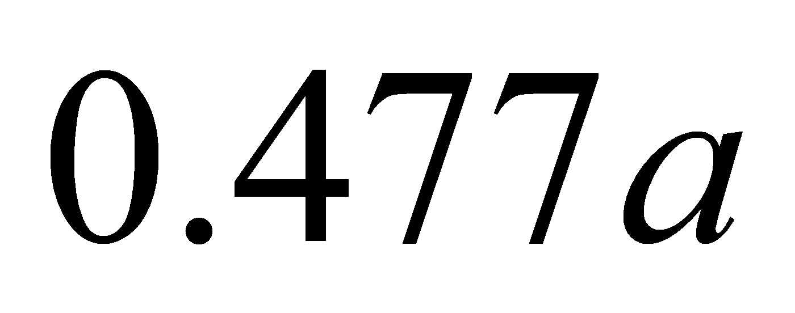
；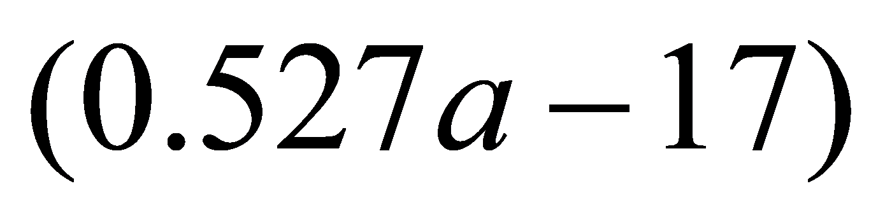
；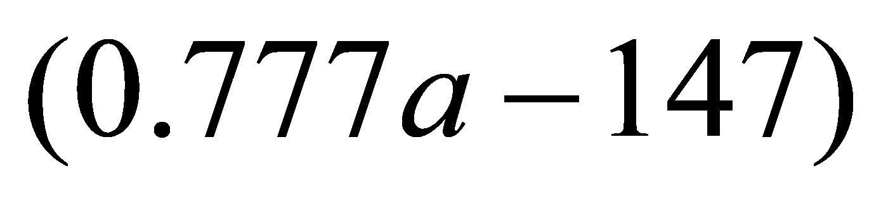
；(3)用电640度
【知识点】列代数式、电费和水费问题(一元一次方程的应用)、有理数乘法的实际应用
【分析】（1）利用小明家这两个月应缴电费 用电单价
用电单价 用电数量，结合分段计费的电费单价及用电量范围，即可求出结论；
用电数量，结合分段计费的电费单价及用电量范围，即可求出结论；
（2）利用应缴电费用电单价用电数量，结合分段计费的电费单价及用电量范围，即可用含的代数式表示出应缴电费；
（3）设小丽家这两个月共用电度，由（2）的结论结合小丽家1和2月份应缴电费元，可得出关于的一元一次方程，解之即可求出结论．
本题考查了一元一次方程的应用、列代数式以及有理数的混合运算，解题的关键是：（1）根据各数量之间的关系，列式计算；（2）根据各数量之间的关系，用含的代数式表示出应缴电费；（3）找准等量关系，正确列出一元一次方程．
【详解】（1）解：根据题意得：
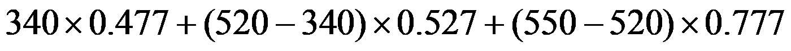
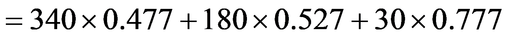
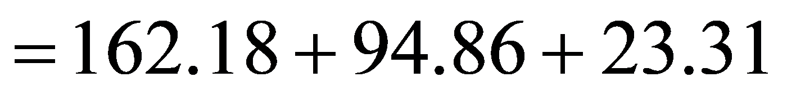
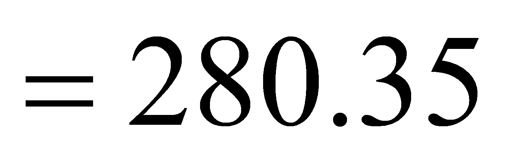
（元）．答：小明家这两个月应缴电费280.35元；
（2）解：根据题意得：当两个月用电量不超过340度时，应收电费元；
当两个月用电量超过340度但不足520度时，应收电费
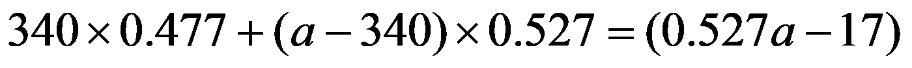
元；当两个月用电量超过520度时，应缴电费
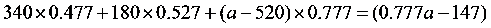
元．故答案为：；；；
（3）解：设小丽家这两个月共用电度，
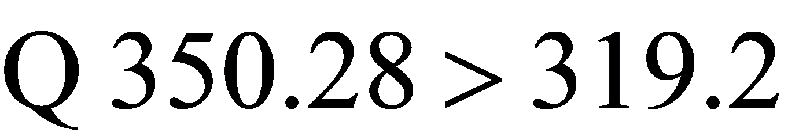
，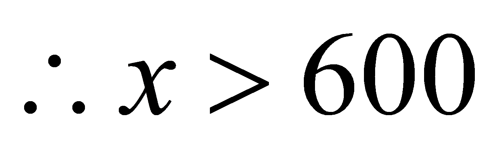
．根据题意得：
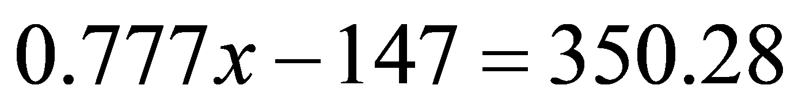
，解得：
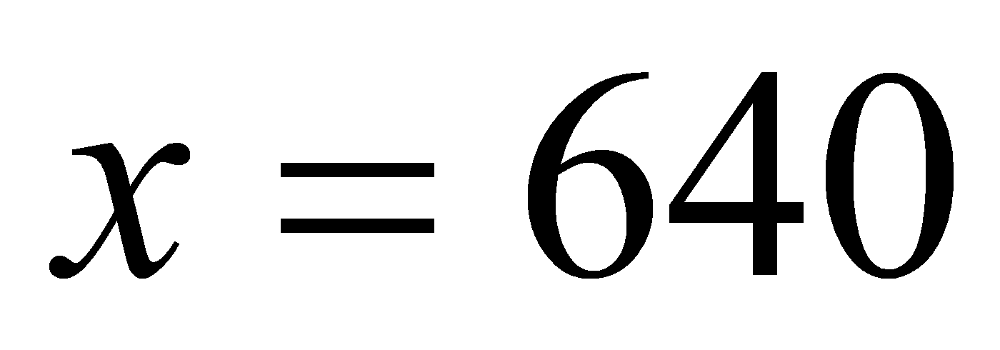
．答：小丽家这两个月共用电640度．
题型01 一元一次方程的应用之古代问题
【典例1】（2024七年级上·全国·专题练习）《直指算法统宗》中有这样一道题，原文如下：“一百馒头一百僧，大僧三个更无争，小僧三人分一个，大小和尚得几丁？”大意为：有 个和尚分个馒头，如果大和尚
个和尚分个馒头，如果大和尚 人分
人分 个，小和尚人分个，正好分完，大、小和尚各有多少人？请解答上述问题．
个，小和尚人分个，正好分完，大、小和尚各有多少人？请解答上述问题．
【答案】小和尚有
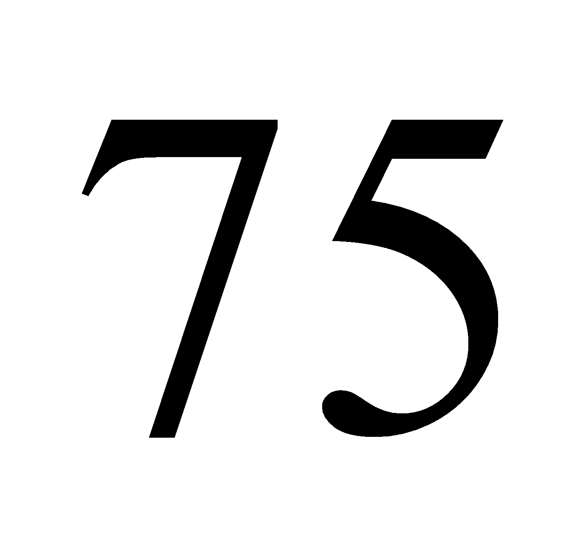
人，大和尚有 人．
人．【知识点】古代问题(一元一次方程的应用)
【分析】本题考查了一元一次方程的实际应用，设小和尚有人，则大和尚有 人，根据个馒头列出方程即可求解，根据题意找到等量关系是解题的关键．
人，根据个馒头列出方程即可求解，根据题意找到等量关系是解题的关键．
【详解】解：设小和尚有人，则大和尚有人，
由题意得，
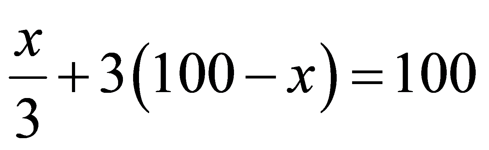
，解得
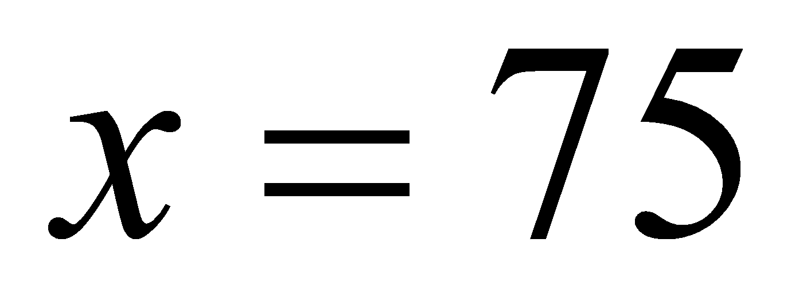
，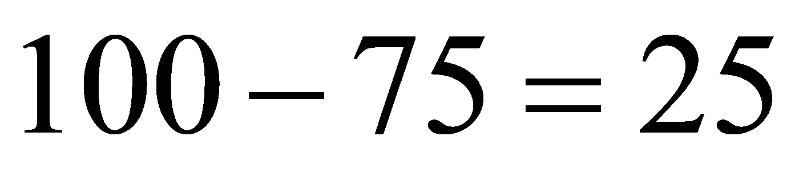
（人），答：小和尚有人，大和尚有人．
【变式1】（2024·安徽六安·模拟预测）《孙子算经》中记载：“今有三人共车，二车空；二人共车，九人步．问人和车各几何？”其大意是：“今有若干人乘车，每人乘一车，最终剩余 辆空车；若每人同乘一车，最终剩下
辆空车；若每人同乘一车，最终剩下 人因无车可乘而步行，问有多少人，多少辆车？”试求有多少人，多少辆车．
人因无车可乘而步行，问有多少人，多少辆车？”试求有多少人，多少辆车．
【答案】有39人， 辆车．
辆车．
【知识点】古代问题(一元一次方程的应用)
【分析】本题考查了一元一次方程的应用，设共有辆车，根据题意列出方程即可求解，根据题意找到等量关系是解题的关键．
【详解】解：设共有辆车，
根据题意得，
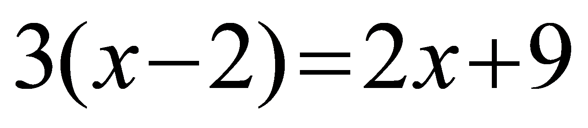
，解得 ，
，
∴
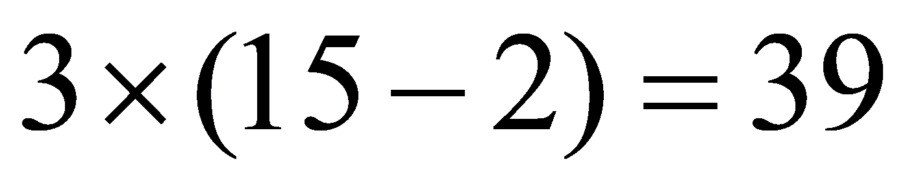
人，答：有39人，辆车．
【变式2】（24-25六年级上·黑龙江绥化·期中）《趣味数学》古希腊数学家丢番图的墓志铭中写到：他一生的六分之一是童年，十二分之一是无忧无虑的少年，又过了一生的七分之一组建幸福的家庭，五年后儿子出生，不料儿子先其父而死，此时儿子只活了父亲岁数的一半，丢番图在悲痛中又度过了四年，最终离开了人世．请你算一算丢番图这一生的年龄是多少岁？
【答案】84岁
【知识点】古代问题(一元一次方程的应用)
【分析】本题考查了一元一次方程的应用，根据题目给出的条件，找出丢番图的年龄的表达式，根据等量关系，列出方程再求解．
【详解】解：设丢番图的年龄是x岁，
根据题意列方程得：
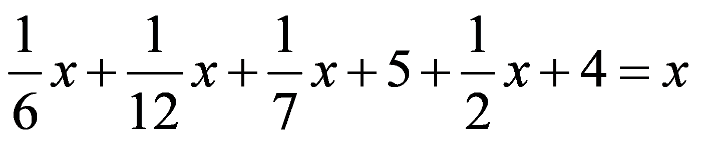
，解得：
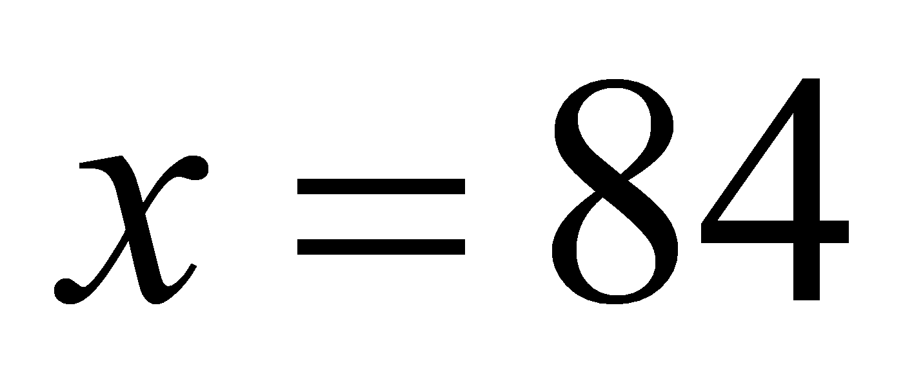
，答：丢番图这一生的年龄是84岁．
题型02 一元一次方程的应用之销售问题
【典例2】（24-25九年级上·重庆·阶段练习）在2024年巴黎奥运会中，中国奥运健儿们斩获44枚金牌完美收官，其中跳水小将全红婵表现出色，一共收获了2枚金牌，某跳水爱好粉丝团，在女子双人10米跳台比赛前准备给全红婵送绿龟礼物，第一次采购了20个绿龟玩偶和20个绿龟挂件，共花费了1400元，已知玩偶的单价比挂件贵50元．
(1)第一次购买时，绿龟玩偶和绿龟挂件的单价分别是多少元？
(2)在第二场女子10米跳水比赛时，跳水爱好粉丝团又组织了一次购买，第二次购买在第一次购买的基础上，挂件单价优惠了元，玩偶单价优惠了 元，挂件和玩偶的购买费用依然不变，玩偶的个数也不变，但挂件比玩偶多出了一件，请求出的值．
元，挂件和玩偶的购买费用依然不变，玩偶的个数也不变，但挂件比玩偶多出了一件，请求出的值．
【答案】(1)购买绿龟挂件的单价为10元，则绿龟玩偶的单价为 元
元
(2)
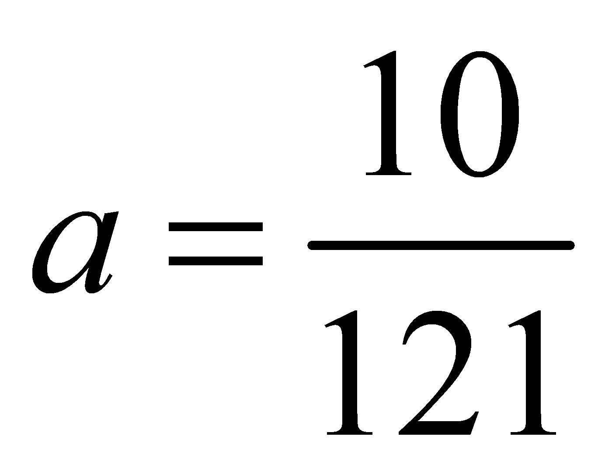
【知识点】销售盈亏(一元一次方程的应用)
【分析】本题主要考查一元一次方程的应用，解题的关键是理解题意；
（1）设购买绿龟挂件的单价为x元，则绿龟玩偶的单价为
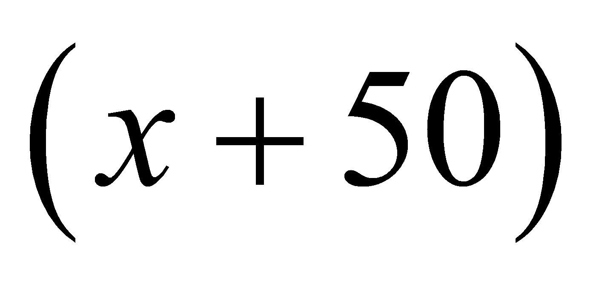
元，然后可得方程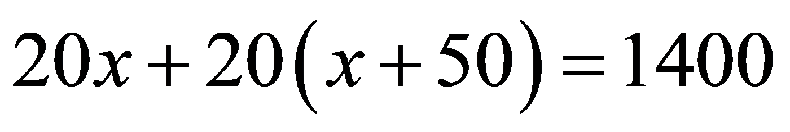
，进而求解即可；（2）由（1）及题意易得挂件单价变为
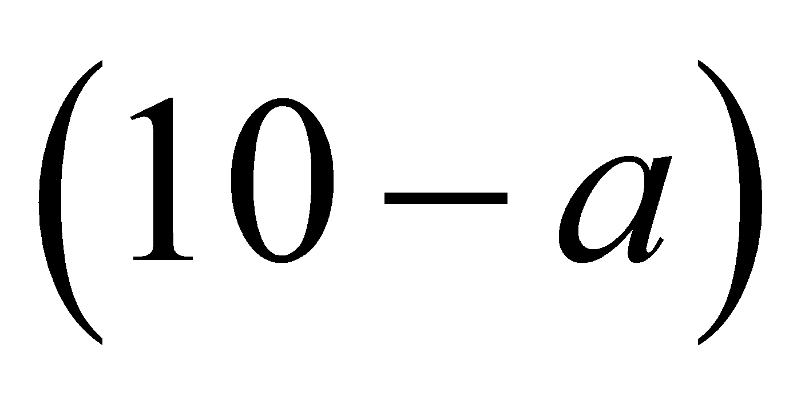
元，玩偶的单价变为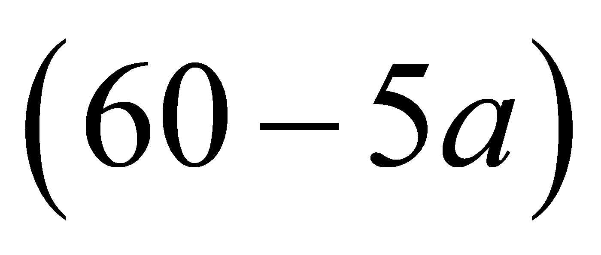
元，然后可得方程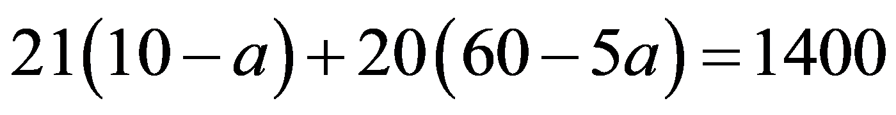
，进而问题可求解．【详解】（1）解：设购买绿龟挂件的单价为x元，则绿龟玩偶的单价为元，由题意得：
解得： ；
；
∴绿龟玩偶的单价为60元；
答：购买绿龟挂件的单价为10元，则绿龟玩偶的单价为元．
（2）解：由（1）及题意得挂件单价变为元，玩偶的单价变为元，则有：
解得：．
【变式1】（24-25七年级上·黑龙江哈尔滨·期中）某超市第一次用 元购进甲、乙两种商品，其中甲商品的件数是乙商品件数的2倍，甲、乙两种商品的进价和售价如表：（注：获利售价
元购进甲、乙两种商品，其中甲商品的件数是乙商品件数的2倍，甲、乙两种商品的进价和售价如表：（注：获利售价 进价）
进价）
甲 | 乙 | |
进价/（元/件） |
|
|
售价/（元/件） |
|
|

(1)该超市将第一次购进的甲、乙两种商品各多少件？
(2)该超市第二次以第一次的进价又购进甲、乙两种商品，其中甲商品的件数不变，乙商品的件数是第一次的3倍．甲商品按原价销售，乙商品降价销售，第二次两种商品都售完以后获得的总利润比第一次获得的总利润多 元，求第二次乙商品的售价是多少？
元，求第二次乙商品的售价是多少？
【答案】(1)购进甲商品 件，购进乙商品件
件，购进乙商品件
(2)第二次乙商品的售价为 元
元
【知识点】销售盈亏(一元一次方程的应用)
【分析】本题考查的是一元一次方程的应用，商品的打折销售问题，掌握利用一元一次方程解决商品的打折销售问题是解题的关键．
（1）设第一次购进甲种商品x件，则购进乙种商品
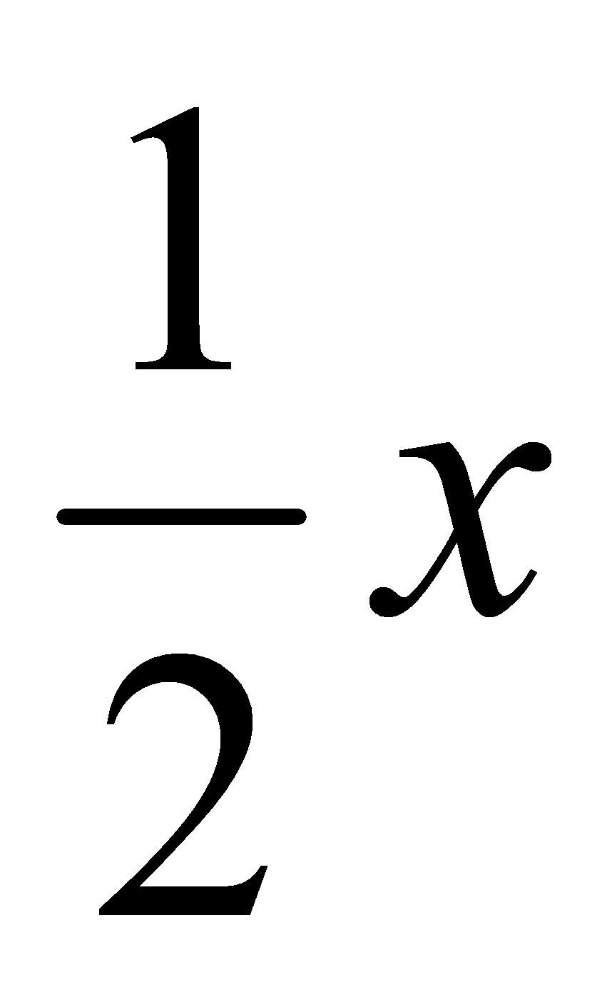
件，利用第一次购进甲、乙两种商品的总价为元，可得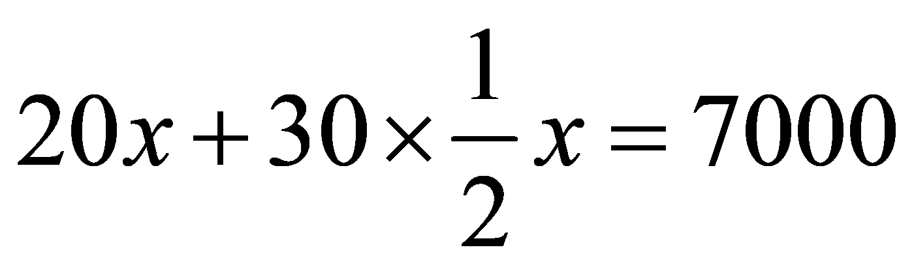
，再解方程可得结论；（2）设第二次购进乙种商品是按原价打y折销售，可得：
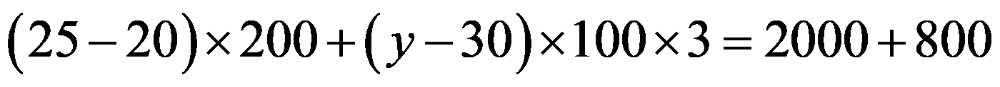
，解方程后可得答案．【详解】（1）设购进甲商品x件，则购进乙商品件，
，
解得： ，
，
∴，
∴购进甲商品件，购进乙商品件．
（2）第二次购进甲商品件，
第二次购进乙商品（件），
第一次利润为（元）
设第二次乙商品售价为y元，
，
解得：
 第二次乙商品的售价为元．
第二次乙商品的售价为元．
【变式2】（24-25七年级上·全国·单元测试）某商场经销两种不同的商品．在春节期间，该商场对这两种商品进行如优惠活动：
打折前一次性购物金额 | 不超过500元 | 超过500元但不超过800元 | 超过800元 |
优惠措施 | 按总价打九折 | 按总价打八折 | 其中800元部分打七折，其余部分打六折 |
(1)张明买了实际付款644元的商品，求商品的原价．
(2)在（1）的条件下，第二天张明买了另外一个商品，实际付款608元．如果这两种商品原价之和大于1300元，那么将这两个商品合为一起付款是否更划算？若是，请求出划算的价格．
【答案】(1)商品的原价是940元；
(2)将这两个商品合为一起付款更划算，划算的价格是1100元或1172元
【知识点】销售盈亏(一元一次方程的应用)
【分析】此题考查了一元一次方程的应用，解答本题的关键是仔细审题，找到等量关系，利用方程思想求解．
（1）设商品的原价是x元，根据题意列出一元一次方程求解即可；
（2）设第二天张明购买商品的原价是y元，根据题意列出一元一次方程求解即可．
【详解】（1）设商品的原价是x元，
∵（元），，
∴．
根据题意得：，
解得：．
答：商品的原价是940元；
（2）设第二天张明购买商品的原价是y元，
∵（元），（元），，
∴．
当时，，
解得：；
当时，，
解得：．
当时，将这两个商品合为一起付款所需费用为（元），
∵（元），，
∴将这两个商品合为一起付款更划算；
当时，将这两个商品合为一起付款所需费用为（元），
∵（元），，
∴将这两个商品合为一起付款更划算．
答：将这两个商品合为一起付款更划算，划算的价格是1100元或1172元．
题型03 一元一次方程的应用之方案问题
【典例3】（24-25七年级上·湖北恩施·阶段练习）某游乐园有如表A，B，C三种购票方式：
种类 | 购票方式 |
A | 一次性使用门票，每张15元 |
B | 年票每张 |
C | 年票每张80元，持票者进入游乐园时需每次再购买6元的门票 |
(1)某游客一年中进入该游乐园共有a次，分别求三种购票方式一年的费用．（用含a的代数式表示）
(2)某游客一年中进入该游乐园共有12次，选择哪种购买方式比较优惠？请通过计算说明．
(3)已知甲、乙、丙三人分别按A，B，C三种方式购票，且他们一年中进入该游乐园的次数相同．一年中，若甲所花的费用与乙所花费用相等，求丙在这一年中进入该游乐园所花的费用．
【答案】(1)A种购票方式：元；B种购票方式： 元；C种购票方式：元．
元；C种购票方式：元．
(2)选择B种购买方式比较优惠
(3)元．
【知识点】列代数式、已知字母的值 ，求代数式的值、方案选择(一元一次方程的应用)
【分析】本题考查了列代数式以及代数式求值，一元一次方程的应用，正确理解题意是解题关键．
（1）根据表格给出的购票方式即可求解；
（2）将 分别代入（1）中所得代数式即可求解；
分别代入（1）中所得代数式即可求解；
（3）设他们一年中进入该游乐园的次数为x，根据甲所花的费用与乙所花费用相等列方程求出x，再利用C种购票方式的费用即可求出丙在这一年中进入该游乐园所花的费用．
【详解】（1）解：A种购票方式：元；
B种购票方式：元；
C种购票方式：元．
（2）解：选择B种购买方式比较优惠，理由如下：
当时，元；元．
而，
所以，选择B种购买方式比较优惠．
（3）解：设他们一年中进入该游乐园的次数为x，根据题意得，
解之得，．
∴（元），
答：丙在这一年中进入该游乐园所花的费用为元．
【变式1】（22-23七年级上·云南玉溪·期末）某服装批发商促销一种裤子和T恤，在促销活动期间，裤子每件定价100元，T恤每件定价50元，并向客户提供两种优惠方案：
方案一：买一件裤子送一件T恤；
方案二：裤子和T恤都按定价的 付款．
付款．
现某客户要购买裤子30件，T恤x件（ ）：
）：
(1)按方案一，购买裤子和T恤共需付款 ______（用含x的式子表示）；
(2)计算一下，购买多少件T恤时，两种优惠方案付款一样？
(3)若两种优惠方案可同时使用，当 时，你能给出一种更为省钱的购买方案吗？
时，你能给出一种更为省钱的购买方案吗？
【答案】(1)
(2)购买90件T恤时，两种优惠方案付款一样
(3)能，用方案一购买裤子30件，送T恤30件，再用方案二购买10件T恤，共需付款3400元
【知识点】方案选择(一元一次方程的应用)
【分析】本题考查了列代数式及一元一次方程的应用，解题的关键是读懂题意，找出等量关系，列方程求解．
（1）根据题意“买一件裤子送一件T恤”，列出代数式即可；
（2）根据“两种优惠方案付款一样”，列方程求解即可得出答案；
（3）先用方案一购买裤子30件，送T恤30件，再用方案二购买10件T恤．
【详解】（1）解：根据题意得，
故按方案一，购买裤子和T恤共需付款；
（2）按方案一，购买裤子和T恤共需付款，
根据题意得，，
解得，
答：购买90件T恤时，两种优惠方案付款一样；
（3）能，用方案一购买裤子30件，送T恤30件，再用方案二购买10件T恤，共需付款
（元），
共需付款3400元．
【变式2】（24-25九年级上·广西南宁·阶段练习）随着互联网的普及和城市交通的多样化，人们出行的时间与方式有了更多的选择．某市有出租车、滴滴快车和神州专车三种网约车，收费标准见下表（该市规定网约车行驶的平均速度为40公里/时）．
超公里费：超过 不足 | 滴滴快车 起步价： 里程费： 时长费：元/分钟 | 神州专车 起步价：10元 里程费：元/公里 时长费： |
 起步价：
起步价： 元
元 元/公里
元/公里 元
元 元/公里
元/公里 元/分钟
元/分钟问题一：“奋进小组”提出的问题是：如果乘坐这三种网约车的里程数都是10公里，他们发现乘坐出租车最节省钱，费用为 ___________元；
问题二：请解答“质疑小组”提出的以下两个问题，
（1）从甲地到乙地，乘坐出租车比滴滴快车节省13.6元，求甲、乙两地间的里程数；
（2）神州专车和滴滴快车对第一次下单的乘客有如下优惠活动：神州专车收费打八折，另外加5.3元的空车费；滴滴快车超过8公里收费立减6.5元；如果两位顾客都是第一次下单，分别乘坐神州专车、滴滴快车且收费相同，求这两位顾客乘车的里程数．
【答案】问题一：；问题二：（1）甲、乙两地间里程数为12公里；（）两位顾客的里程数为5或30公里．
【知识点】有理数四则混合运算的实际应用、方案选择(一元一次方程的应用)
【分析】本题考查了一元一次方程的应用，读懂题意，找到等量关系，列出方程是解题的关键．
问题一：根据出租车的收费标准解答；
问题二：（1）设甲、乙两地间里程数为x公里，分 和
和 两种情况列出方程并解答；
两种情况列出方程并解答；
（2）设两位顾客的里程数为x公里，分和两种情况，分别列出方程并解答．
【详解】解：问题一：（元）．
故答案为：30.8；
问题二：（1）解：设甲、乙两地间里程数为x公里，
①若，，
解得（舍）．
②若，．
解得．
答：甲、乙两地间里程数为12公里；
（2）解：设两位顾客的里程数为x公里
①若时，；
解得 ；
；
②若时，，
解得 ；
；
答：两位顾客的里程数为5或30公里．
题型04 一元一次方程的应用之配套问题
【典例4】（24-25七年级上·重庆·阶段练习）甲、乙两个家具厂生产同一规格的单人课桌、椅，由于甲、乙两厂特长不同，甲厂每月（ 天）用
天）用 的时间生产课桌，
的时间生产课桌， 的时间生产课椅，每个月可生产900套课桌椅；乙厂每月用
的时间生产课椅，每个月可生产900套课桌椅；乙厂每月用 的时间生产课桌，
的时间生产课桌， 的时间生产课椅，每个月可生产1500套课桌椅，现在两厂联合生产，经过合理安排，尽量发挥各自特长．现在两厂每月比过去可多生产课桌椅多少套？
的时间生产课椅，每个月可生产1500套课桌椅，现在两厂联合生产，经过合理安排，尽量发挥各自特长．现在两厂每月比过去可多生产课桌椅多少套？
【答案】100套
【知识点】配套问题(一元一次方程的应用)
【分析】根据题干，一个月按30天计算，由此可以分别求得甲乙两厂生产课桌椅的工作效率，由题干分析可得可知：乙厂生产椅子的效益高，那么我们尽量的让乙厂多生产椅子，由甲厂来生产桌子，为了使生产的桌椅正好配套，所以乙生产足够数量的椅子后就转生产桌子，这里可以设乙生产天椅子后转生产桌子，正好与甲厂生产的桌子合起来桌椅配套，由此即可列出方程解决问题．根据题干分别求得甲乙两厂生产课桌椅的工作效率，找出它们各自擅长的工作，进行合理安排，即可解决问题，本题考查了一元一次方程的配套问题，正确掌握相关性质内容是解题的关键．
【详解】解：甲厂每天生产课桌：（张），
椅子：（张）；
乙厂每天生产课桌：（张），
椅子：（张）；
设乙生产天椅子后转生产桌子，正好与甲厂生产的桌子合起来桌椅配套．
根据题意可得方程：
，
，
，
；
（套），
（套），
答：现在两厂每月比过去可多生产课桌椅100套．
【变式1】（24-25七年级上·黑龙江哈尔滨·阶段练习）某车间有27个工人生产甲、乙两种零件，每3个甲种零件与2个乙种零件配成一套，已知每个工人每天能加工甲种零件12个或乙种零件16个，为使每天生产的两种零件配套，则生产甲、乙零件的工人数各多少人？
【答案】应分配18人生产甲种零件，9人生产乙种零件才能使每天生产的甲种零件和乙种零件刚好配套．
【知识点】配套问题(一元一次方程的应用)
【分析】本题考查了一元一次方程的应用．关键是设出生产甲和乙的人数，以配套的比例列方程求解．设应分配人生产甲种零件，人生产乙种零件才能使每天生产的甲种零件和乙种零件刚好配套，根据每人每天平均能生产甲种零件12个或乙种零件16个，可列方程求解．
【详解】解：设应分配人生产甲种零件，则应分配人生产甲种零件，由题意得：
，
解得，
（人 ．
．
答：应分配18人生产甲种零件，9人生产乙种零件才能使每天生产的甲种零件和乙种零件刚好配套．
【变式2】（22-23七年级上·四川绵阳·期末）糕点店中秋节前要制作一批盒装月饼，每盒装2块大月饼和6块小月饼，制作1块大月饼要用面粉，1块小月饼要用面粉．
(1)若制作若干盒月饼共用了面粉，则制作了多少盒月饼？
(2) 公司决定向该糕点厂定制月饼礼盒，该糕点厂给出的团购价格如下：
公司决定向该糕点厂定制月饼礼盒，该糕点厂给出的团购价格如下：
购买的数量（盒） | 不超过60或刚好60 | 超过60 |
每盒单价（元） | 200 | 180 |
若公司决定给45名员工和名客户各订购一盒月饼作为福利，用含的式子表示购买月饼的费用．
【答案】(1)制作了1200盒月饼．
(2)当时，则购买月饼的费用为元：当时，则购买月饼的费用为元．
【知识点】列代数式、配套问题(一元一次方程的应用)
【分析】本题考查了一元一次方程的应用、列代数式，理解题意，正确列出代数式与方程是解此题的关键．
（1）设制作了盒月饼，根据“制作若干盒月饼共用了面粉”列出一元一次方程，解方程即可得出答案；
（2）分两种情况：当时，当时，分别列出代数式即可．
【详解】（1）解：设制作了盒月饼．
根据题意得，
解得．
答：制作了1200盒月饼．
（2）解：当时，则购买月饼的费用为元：
当时，则购买月饼的费用为元．
题型05 一元一次方程的应用之工程问题
【典例5】（2024七年级上·全国·专题练习）甲、乙两人共同承包一项工程，甲单独做30天完成，乙单独做20天完成，合同规定15天完成，否则每超过1天罚款1000元．
(1)在规定时间内，甲、乙两人能否完成这项工程？
(2)现两人合作了这项工程的 ，因别处有急事，必须调走1人．调走谁更合适？
，因别处有急事，必须调走1人．调走谁更合适？
【答案】(1)在规定时间内，甲、乙两人能完成这项工程
(2)调走甲更合适
【知识点】工程问题(一元一次方程的应用)
【分析】本题考查了一元一次方程的应用－工程问题．
（1）设甲乙合作需要x天完成，建立方程求出合作时间，再与15进行比较可以得出结论；
（2）先求出完成需要的时间，再求出完成剩余工作量所用的时间及完成剩余工作量的工作效率，然后与甲、乙独自完成这项工作的工作效率进行比较，可以求出结论．
【详解】（1）解：设甲、乙两人合作完成此项工程需x天．
则，解得．
因为，
所以在规定时间内，甲、乙两人能完成这项工程；
（2）解：设两人合作a天完成工程的．
则
解得 ．
．
若调走甲，则乙还需（天）；
若调走乙，侧甲还需（天）．
因为 （天）
（天） 天，
天，
（天） 天，
天，
所以调走甲更合适．
【变式1】（24-25七年级上·天津·期中）一项工程，甲队单独做需18天，乙队单独做需24天，如果两队合作8天后，余下的工程再由甲队单独完成．
(1)甲队还需多少天才能完成这项工程？
(2)若甲队每天的酬劳为2000元，乙队每天的酬劳为1500元，问完成这项工程共需支付两队多少钱？
【答案】(1)4天
(2)36000元
【知识点】工程问题(一元一次方程的应用)、有理数四则混合运算的实际应用
【分析】本题考查一元一次方程的应用，有理数四则混合运算的应用，根据题意，正确列出方程是解答的关键．
（1）设这项工程为“1”，设甲队还需x天才能完成这项工程，根据“两队的工程和等于1”列方程求解即可．
（2）根据两队完成的天数和各自的报酬求解即可．
【详解】（1）解：设这项工程为“1”，根据题意，甲队、乙队的工作效率分别为 ，
， ，
，
设甲队还需x天才能完成这项工程，
根据题意，得，
解得 ，
，
答：甲队还需4天才能完成这项工程；
（2）解：
 （元），
（元），
答： 完成这项工程共需支付两队36000元．
【变式2】（24-25七年级上·黑龙江哈尔滨·期中）哈尔滨亚冬会的某个比赛场馆正在装修，装修后产生的建筑垃圾需要清理．计划租用甲、乙两车队清理建筑垃圾，已知甲车队单独运完需要 天，乙车队单独运完需要
天，乙车队单独运完需要 天．乙车队先运了
天．乙车队先运了 天，然后甲、乙两车队合作运完剩下的垃圾．
天，然后甲、乙两车队合作运完剩下的垃圾．
(1)甲、乙两车队合作还需要多少天运完垃圾？
(2)已知甲车队每天的租金元，比乙车队少元，运完垃圾后共需支付甲、乙两车队租金多少元？
【答案】(1) 天
天
(2)元
【知识点】工程问题(一元一次方程的应用)、有理数四则混合运算的实际应用
【分析】本题主要考查了一元一次方程的实际应用，根据题意找出等量关系并列出方程是解题关键；
（1）根据题意首先可以得知甲车效率为每天运送 ，乙车效率为每天运送
，乙车效率为每天运送 ，据此设甲、乙两车合作还需要天运完垃圾，然后进一步列出方程求解即可；
，据此设甲、乙两车合作还需要天运完垃圾，然后进一步列出方程求解即可；
（2）根据甲车队每天的租金元，比乙车队少元，计算求解即可；
【详解】（1）解：设甲、乙两车合作还需要天运完垃圾，
根据题意得：，
解得：，
答：甲、乙两车合作还需要天运完垃圾．
（2）解：乙队一共工作了天，甲队一共工作了天，
，
答：运完垃圾后共需支付甲、乙两车队租金元．
题型06 一元一次方程的应用之行程问题
【典例6】（24-25七年级上·辽宁沈阳·阶段练习）小明、小杰两人在400米的环形赛道上练习跑步，小明每分钟跑280米，小杰每分钟跑220米．若小明、小杰两人同时同地反向出发，那么出发几分钟后，小明，小杰第一次相遇？
【答案】经过 分钟以后小明，小杰第一次相遇
分钟以后小明，小杰第一次相遇
【知识点】行程问题(一元一次方程的应用)
【分析】本题考查了一元一次方程的应用，设分钟以后小明，小杰第一次相遇，根据题意，列出方程，求出，即可求解．
【详解】解：设分钟以后小明，小杰第一次相遇，
由题意可得， ，
，
解得，
答：经过分钟以后小明，小杰第一次相遇．
【变式1】（2024七年级上·全国·专题练习）甲站和乙站相距，一列慢车从甲站开出，速度为，一列快车从乙站开出，速度为 ．
．
(1)若两车相向而行，慢车先开，快车开出多少小时后两车相遇？
(2)若两车同时开出，相背而行，多少小时后两车相距 ？
？
(3)若两车同时开出，快车在慢车后面同向而行，多少小时后两车相距 （快车在慢车的后面）？
（快车在慢车的后面）？
【答案】(1)快车开出 后两车相遇
后两车相遇
(2)后两车相距
(3) 后两车相距
后两车相距
【知识点】行程问题(一元一次方程的应用)
【分析】本题考查了一元一次方程的应用，根据每一问的速度和路程列出关于时间的方程式并求解是解题的关键．
（1）设快车开出 后两车相遇，根据两车行驶路程和为，列出方程式即可解题；
后两车相遇，根据两车行驶路程和为，列出方程式即可解题；
（2）设 后两车相距，两车行驶路程和再加上甲站和乙站的距离为，列出方程式即可解题；
后两车相距，两车行驶路程和再加上甲站和乙站的距离为，列出方程式即可解题；
（3）设 后两车相距，根据快车所走的路程比慢车所走的路程多，即可列出方程式，即可解题．
后两车相距，根据快车所走的路程比慢车所走的路程多，即可列出方程式，即可解题．
【详解】（1）解：设快车开出后两车相遇．
．
由题意，得，
解得 ．
．
答：快车开出后两车相遇．
（2）解：设后两车相距．
由题意，得 ，
，
解得 ．
．
答：后两车相距．
（3）解：设后两车相距．
由题意，得，
解得．
答：后两车相距．
【变式2】（24-25七年级上·广东惠州·期中）已知在数轴上点A表示的数为8，B在A点左侧，且A，B两点间的距离为14．动点P从点A出发，以每秒4个单位长度的速度沿数轴向左匀速运动，点Q从B点向右运动，速度为每秒2个单位，PQ同时出发，设运动时间为 秒．
秒．
(1)数轴上点B表示的数是______；当点P运动到 的中点时，它所表示的数是______．
的中点时，它所表示的数是______．
(2)动点Q从点B出发，以每秒2个单位长度的速度沿数轴向右匀速运动，求：
①当点P和点Q运动多少秒时，点P和点Q第一次相遇？
②当点P运动多少秒时，点P与点Q间的距离为6个单位长度？
【答案】(1) ，1
，1
(2)① 秒；②
秒；② 秒或
秒或 秒
秒
【知识点】数轴上的动点问题、行程问题(一元一次方程的应用)、数轴上两点之间的距离
【分析】本题主要考查了数轴上两点距离计算，解决本题的关键是根据数轴上动点的运动情况列方程．
（1）先根据数轴上两点距离计算公式得到点BB表示的数，再根据两点中点计算公式求解即可；
（2）①根据相遇问题的等量关系，利用动点P的运动距离加上动点Q的运动距离等于A，B两点间的距离，列方程即可求解；
②根据点P与点Q相遇前和相遇后之间的距离为6个单位长度，分两种情况列方程即可求解．
【详解】（1）解∶∵数轴上点A表示的数为8，B在A点左侧，且A，B两点间的距离为14．
∴点B表示的数为 ，
，
当点P运动到的中点时，它所表示的数是 ，
，
故答案为∶，1；
（2）解∶①点P和点Q运动t秒时，点P和点Q第一次相遇，
则，
解得，
即点P和点Q运动秒时，点P和点Q第一次相遇；
②设点P运动t秒
根据题意得：
当点P与点Q相遇前，点P与点Q距离6个单位长度时，则，
解得 ；
；
当点P与点Q相遇后，点P与点Q距离6个单位长度时，则，
解得 ，
，
∴当点P运动秒或秒时，点P与点Q间的距离为6个单位长度．
题型07 一元一次方程的应用之数字问题
【典例7】（23-24七年级上·江苏苏州·期中）一个两位数，十位数字是个位数字的 2 倍，将两个数对调后得到的新两位数与原两位数的和是99，原两位数是 ．
【答案】63
【知识点】数字问题(一元一次方程的应用)
【分析】本题考查了一元一次方程的应用，找准等量关系，正确列出一元一次方程是解题的关键．设原两位数的个位数字为，则十位数字为 ，根据将两个数对调后得到的新两位数与原两位数的和是99，可列出关于的一元一次方程，解之可求出的值，再将其代入中，即可求出结论．
，根据将两个数对调后得到的新两位数与原两位数的和是99，可列出关于的一元一次方程，解之可求出的值，再将其代入中，即可求出结论．
【详解】解：设原两位数的个位数字为，则十位数字为，
根据题意得：，
解得： ，
，
，
原两位数是63．
故答案为：63．
【变式1】（24-25七年级上·广东广州·期中）将奇数至 按照顺序排成下表：
按照顺序排成下表：
记 表示第
表示第 行第
行第 个数，如
个数，如 表示第行第个数是
表示第行第个数是 ．
．
(1) ；
；
(2)将表格中的 个阴影格子看成一个整体并平移，所覆盖的个数之和能否等于．若能，求出个数中的最大数；若不能，请说明理由；
个阴影格子看成一个整体并平移，所覆盖的个数之和能否等于．若能，求出个数中的最大数；若不能，请说明理由；
(3)用、的式子表示 ；
；
(4)若，求、的值．
【答案】(1)
(2)不能，理由见解析
(3)
(4) ，
，
【知识点】数字类规律探索、数字问题(一元一次方程的应用)、有理数四则混合运算的实际应用、列代数式
【分析】本题考查一元一次方程的应用、数字的变化类、列代数式，
（1）根据题意可知表示第行第个数，每行都有 个数，所有的数字都是奇数，然后即可计算出相应的值；
个数，所有的数字都是奇数，然后即可计算出相应的值；
（2）先判断，然后设个阴影格子中的数分别为、 、
、 、
、 ，即可列出相应的方程，然后求解即可说明理由；
，即可列出相应的方程，然后求解即可说明理由；
（3）根据表格中的数据和发现，可以用含、的代数式表示出．
（4）根据题意，可以得到 ，然后、为整数，
，然后、为整数， ，即可得到、的值；
，即可得到、的值；
解答本题的关键是明确题意，发现数字的变化特点，找出等量关系，列出相应的方程．
【详解】（1）解：由题意可得，
 ，
，
故答案为：；
（2）所覆盖的个数之和不能等于．
理由：设个阴影格子中的数分别为、、、，
由题意得： ，
，
解得：，
∵为整数，
∴所覆盖的个数之和不能等于；
（3）由题意可得，
 ，
，
故答案为：；
（4）∵，
∴，
∴，
∵、为整数，，
∴，．
【变式2】（2024七年级上·全国·专题练习）如图，阶梯图的每个台阶上都标着一个数，从下到上的第1个至第4个台阶上依次标着 ，
， ，1，9，且任意相邻四个台阶上的数的和都相等．
，1，9，且任意相邻四个台阶上的数的和都相等．
(1)前4个台阶上的数的和是多少？
(2)第5个台阶上的数x是多少？
(3)试用含k（k为正整数）的式子表示出数“1”所在的台阶数．
【答案】(1)3
(2)
(3)
【知识点】用代数式表示数、图形的规律、数字类规律探索、有理数加法运算、数字问题(一元一次方程的应用)
【分析】本题考查了图形的变换规律，解题的关键是根据相邻四个台阶上的数的和都相等得出台阶上的数字每4个一循环．
（1）将前4个数字相加可得；
（2）根据“相邻四个台阶上的数的和都相等”，列方程求解即可；
（3）根据“台阶上的数是每4个一循环”求解可得，观察发现，由循环规律即可知道“1”所在的台阶数为．
【详解】（1）解：由题意，得．
故前4个台阶上的数的和是3．
（2）由题意，得 ，
，
所以 ，
，
故第5个台阶上的数x是．
（3）由题意知，台阶上的数每4个一循环， ，−2，1，9，，−2，1，9，…
，−2，1，9，，−2，1，9，…
数“1”所在的台阶数为3，7，11，15，19. . .，
所以数“1”所在的台阶数为．
题型08 一元一次方程的应用之比赛问题
【典例8】（24-25七年级上·黑龙江哈尔滨·期中）“办学互助”是萧红中学办学特色之一．七年18班的第一组6名同学，自行组织知识竞赛，共设20道选择题，各题分值相同，每题必答，下表记录的是5名同学的得分情况：
参赛者 | A | B | C | D | E |
答对题数 | 20 | 19 | 18 | 14 | 10 |
答错题数 | 0 | 1 | 2 | 6 | 10 |
得分 | 100 | 94 | 88 | 64 | 40 |
(1)由表格知，答对一题得________分，答错一题得________分；
(2)第6名同学F得了82分，请你帮他算一算，答对了几道题？
【答案】(1)5，
(2)17
【知识点】比赛积分(一元一次方程的应用)、有理数四则混合运算的实际应用
【分析】本题考查的是一元一次方程的应用；
（1）根据表格中参赛者A的成绩和参赛者B的成绩即可求出每答对一道题得分和每答错一道题扣分；
（2）设答对了x道题，则答错了道题，根据题意列一元一次方程即可求出结论．
【详解】（1）解：由表格中参赛者A的成绩可知：每答对一道题得分，
由表格中参赛者B的成绩可知：每答错一道题扣 分，
分，
故答案为：5，；
（2）解：设答对了x道题，则答错了道题，
根据题意，得，
解得 ，
，
答：答对了17道题．
【变式1】（2024七年级上·全国·专题练习）在2022年女足亚洲杯决赛中，中国女足以 逆转韩国女足，时隔16年再夺亚洲杯冠军！某学校掀起一股足球热，举行了班级联赛，九（1）班开局11场保持不败，共积25分，按照比赛规则，胜一场积3分，平一场积1分，负一场积0分，求该班获胜的场数．
逆转韩国女足，时隔16年再夺亚洲杯冠军！某学校掀起一股足球热，举行了班级联赛，九（1）班开局11场保持不败，共积25分，按照比赛规则，胜一场积3分，平一场积1分，负一场积0分，求该班获胜的场数．
【答案】九（1）班获胜7场
【知识点】比赛积分(一元一次方程的应用)
【分析】本题考查了一元一次方程的应用，找准等量关系，正确列出一元一次方程是解题的关键．
设九（1）班获胜x场，则平场，根据九（1）班开局11场共积25分，即可得出关于x的一元一次方程，解之即可得出结论．
【详解】解：设九（1）班获胜x场，则平场，
根据题意得： ，
，
解得： ．
．
答：九（1）班获胜7场．
【变式2】（23-24六年级上·山东淄博·期末）某校初一（3）班组织生活小常识竞赛，共设20道选择题，各题分值相同，每题必答．下表记录了其中4个参赛者的得分情况．
参赛者 | 答对题数 | 答错题数 | 得分 |
A | 20 | 0 | 100 |
B | 18 | 2 | 88 |
C | 64 | ||
D | 10 | 10 | 40 |
(1)参赛者E说他错了10个题，得分为50分，请你判断可能吗？并说明理由：
(2)参赛者C答对了几道题？请你通过计算说明．
【答案】(1)不可能，详见解析
(2)14
【知识点】比赛积分(一元一次方程的应用)
【分析】本题主要考查了一元一次方程的应用，根据题意发现答对一道得5分、答错一道扣1分成为解答本题的关键．
（1）由参赛者A可得答对1题得5分，设答错1题扣x分，，然后根据题意列方程求解即可；
（2）根据共作答20道，可补全参赛者B、D；设参赛者C答对y题，然后列一元一次方程求解即可．
【详解】（1）不可能，
∵参赛者A答对20题答错0题得100分，
∴答对1题得5分，
设答错1题扣x分，
由参赛者B的得分可得，．
解得 ，
，
∴答错1题扣1分
∴参赛者E说他错了10个题，不可能得50分；
（2）∵共有20题，参赛者B答错2题，
∴答对18题，
∵参赛者D答对10题，
∴答错10题，
设参赛者C答对y题，
由题意得，，
解得 ．
．
故参赛者C答对14题．
题型09 一元一次方程的应用之几何问题
【典例9】（24-25八年级上·湖南永州·阶段练习）如图，在 中，
中， ，
， ，，点
，，点 是
是 的中点，动点
的中点，动点 从点出发，以每秒个单位的速度沿运动．若设点运动的时间是
从点出发，以每秒个单位的速度沿运动．若设点运动的时间是 ，若的面积等于
，若的面积等于 ．那么
．那么 值是（ ）
值是（ ）
A． B． C．或 D．不存在
C．或 D．不存在
【答案】C
【知识点】几何问题(一元一次方程的应用)
【分析】本题考查了三角形的面积公式的运用以及一元一次方程的应用，解答时灵活运用三角形的面积公式求解是关键，同时要注意分类讨论．分当点在 上时，当点在
上时，当点在 上时，两种情况讨论，根据三角形的面积公式建立方程求出其解即可．
上时，两种情况讨论，根据三角形的面积公式建立方程求出其解即可．
【详解】解： ，点是的中点，
，点是的中点，
 ，
，
①如图1，当点在上， ，
，
，的面积等于，
 ，
，
解得： ；
；
②如图2，当点在上时，，
 ，
，
，
解得：t；
综上所述，值是或，
故选：C．
【变式1】（24-25七年级上·浙江宁波·阶段练习）如图，8张正方形泡沫板拼成一个长方形展板，其中最小的两个正方形边长均为1米，则长方形展板的面积是 平方米．
【答案】130
【知识点】几何问题(一元一次方程的应用)
【分析】本题考查一元一次方程的应用，解答本题的关键是明确题意，先第二小的正方形的边长是米，则五种正方形的边长从小到大依次是1米，米， 米，米，
米，米， 米，根据长方形展板上下对边相等，列出相应的方程，从而可以求得x的值，然后即可计算出展板的长和宽，再根据长方形的面积长宽，代入数据计算即可．
米，根据长方形展板上下对边相等，列出相应的方程，从而可以求得x的值，然后即可计算出展板的长和宽，再根据长方形的面积长宽，代入数据计算即可．
【详解】解：设第二小的正方形的边长是米，则五种正方形的边长从小到大依次是1米，米，米，米，米，
根据长方形展板上下对边相等，得，
解得，
展板的长是 （米）
（米）
，展板的宽是 （米），
（米），
长方形展板的面积是（平方米）．
故答案为：130．
【变式2】（24-25七年级上·吉林长春·期中）如图1，在长方形 中，
中， ．点P从点B出发，以
．点P从点B出发，以 的速度沿方向运动到点C停止，点Q从点C出发，以
的速度沿方向运动到点C停止，点Q从点C出发，以 的速度沿
的速度沿 方向运动到点C停止，连接
方向运动到点C停止，连接 、
、 ；若P、Q两点同时出发，设点P的运动时间为t秒
；若P、Q两点同时出发，设点P的运动时间为t秒 ，的面积为．
，的面积为．
(1)当 时，
时， _________；当
_________；当 时，_________．
时，_________．
(2)当点P和点Q相遇时，求t的值．
(3)当 时，用含t的代数式表示S．
时，用含t的代数式表示S．
(4)如图2，在点P和点Q不重合的情况下，连接 ，当以A、P、Q、D为顶点的四边形的面积是长方形的面积的时，直接写出t的值．
，当以A、P、Q、D为顶点的四边形的面积是长方形的面积的时，直接写出t的值．
【答案】(1) ；
；
(2)
(3)
(4)或或
【知识点】列代数式、几何问题(一元一次方程的应用)、有理数四则混合运算、行程问题(一元一次方程的应用)
【分析】（1）先根据和求出 ，
， ，再求出
，再求出 的值即可；
的值即可；
（2）根据P、Q的运动速度求出t的值即可；
（3）分两种情况进行讨论：当 ，即、Q相遇前，当，即、Q相遇后，点Q到达点B前，根据三角形面积公式求出结果即可；
，即、Q相遇前，当，即、Q相遇后，点Q到达点B前，根据三角形面积公式求出结果即可；
（4）分三种情况讨论：当，即、Q相遇前，当，即、Q相遇后，当，点Q从点B向点C运动的过程中，分别求出结果即可．
【详解】（1）解：当时， ，
， ，
，
∴ ，
，
当时， ，
， ，
，
∴ ．
．
（2）解： ，
，
解得：，
即当点P和点Q相遇时，t的值为 ．
．
（3）解：当，即、Q相遇前，
，
∴ ；
；
当，即、Q相遇后，点Q到达点B前，
 ，
，
∴ ；
；
综上分析可知：．
（4）解：四边形的面积为 ，
，
∴以A、P、Q、D为顶点的四边形的面积是：，
当，即、Q相遇前，
，
则，
解得：；
当，即、Q相遇后，点Q到达点B前，
，
则，
解得： ；
；
当，点Q从点B向点C运动的过程中，
，
则，
解得： ；
；
综上分析可知：当或或时，以A、P、Q、D为顶点的四边形的面积是长方形的面积的．
【点睛】本题主要考查了列代数式，一元一次方程的应用，有理数混合运算的应用，方程思想与分类讨论是解题的关键．
题型10 一元一次方程的应用之电费和水费问题
【典例10】（24-25七年级上·全国·期中）某市出租车收费标准是：起步价10元，可乘 ；到
；到 时，超过的部分按
时，超过的部分按 元
元 的标准收费；超过时，超过的部分按2元的标准收费．（不足
的标准收费；超过时，超过的部分按2元的标准收费．（不足 的按计算）
的按计算）
(1)若某人乘坐了 的路程，则他应支付的费用为 ；
的路程，则他应支付的费用为 ；
(2)若某人乘坐了x（ 的整数）千米的路程，则他应支付的费用为 ；
的整数）千米的路程，则他应支付的费用为 ；
(3)若某人乘坐出租车共花了15元，问出租车行驶了多少公里？
【答案】(1)元
(2) 元
元
(3)
【知识点】列代数式、已知字母的值 ，求代数式的值、电费和水费问题(一元一次方程的应用)
【分析】本题主要考查列代数式及求代数式的值，理解题意，列出相应代数式是解题关键．
（1）首先起步价覆盖前，费用为10元．剩余的 在到的范围内，按元收费，即元．然后相加即可得出答案
在到的范围内，按元收费，即元．然后相加即可得出答案
（2）对于x（的整数）千米的路程：起步价覆盖前，费用为10元．接下来的
 按元收费，即
按元收费，即 元．超过的部分按2元收费，即
元．超过的部分按2元收费，即 元．然后相加即可
元．然后相加即可
（3）首先扣除起步价和到的费用，剩余的费用为超过的部分产生的，按2元计算，即可解答．
【详解】（1），

 ；
；
故答案为：元
（2）解：
 ，
，

故答案为：元．
（3）解：设出租车行驶了x公里，根据题意得；
 元，
元，
 ，
，
，
，
，
 ，
，
答：共行驶了6公里．
【变式1】（24-25七年级上·陕西榆林·期中）我市某小区居民使用自来水2024年标准缴费如下（水费按月缴纳）：
用户月用水量 | 单价 |
不超过12 | a元/ |
超过12 |
|
超过20 |
|
 元/
元/(1)某户4月份用了13 的水，求该户4月份应缴纳的水费；（用含a的式子表示）
的水，求该户4月份应缴纳的水费；（用含a的式子表示）
(2)设某户月用水量为n，当 ，时，该户应缴纳的水费为多少元？（用含n的式子表示）
，时，该户应缴纳的水费为多少元？（用含n的式子表示）
(3)当 时，甲、乙两户一个月共用水32，已知甲户缴纳的水费超过了24元，设甲户这个月用水x，试求甲，乙两户一个月共缴纳的水费．（可用含x的式子表示）
时，甲、乙两户一个月共用水32，已知甲户缴纳的水费超过了24元，设甲户这个月用水x，试求甲，乙两户一个月共缴纳的水费．（可用含x的式子表示）
【答案】(1)元
(2)元
(3)当时，甲、乙两用户一个月共缴纳的水费为72元；当时，甲、乙两用户一个月共缴纳的水费为 元
元
【知识点】电费和水费问题(一元一次方程的应用)
【分析】(1) 根据费用= ，列式计算即可．
，列式计算即可．
(2)根据题意，得，费用= ，得出的结论．
，得出的结论．
(3) 分和，两种情况计算即可．
本题考查了一元一次方程的生活实际应用，正确理解分档的界点是解题的关键．
【详解】（1）解：根据题意，得，当时，每费用为 元，当时，每费用为 元，
元，
故本月总费用为： （元）．
（元）．
故该用户4月份应缴纳的水费为元．
（2）解：根据题意，得，，
故不超过12的部分费用为：（元）；
超过12但不超过20的部分费用为： （元）；
（元）；
超过20的部分费用为：（元），
故该户应缴纳的水费为： (元)．
(元)．
答：应交电费 元．
元．
（3）解：根据题意，得，且元，
根据题意，得甲户缴纳的水费超过了24元，设甲户这个月用水x，
故 ；
；
当时，甲户用水量超过12但不超过20，乙户用水量不少于12但少于20，
所以甲、乙两用户一个月共缴纳的水费为：

（元）．
当时，甲的用水量超过20乙的用水量不超过12，
所以甲、乙两用户一个月共缴纳的水费为：
 元．
元．
综上所述，当时，甲、乙两用户一个月共缴纳的水费为72元；当时，甲、乙两用户一个月共缴纳的水费为元．
【变式2】（23-24七年级上·江苏盐城·阶段练习）为响应国家节能减排的号召，鼓励人们节约用电，保护能源，某市实施用电“阶梯价格”收费制度．收费标准如表：
居民每月用电量 | 单价（元 |
不超过50度的部分 |
|
超过50度但不超过200度的部分 |
|
超过200度的部分 |
|
 度）
度）

已知小智家上半年的用电情况如表（以200度为标准，超出200度记为正、低于200度记为负）
一月份 | 二月份 | 三月份 | 四月份 | 五月份 | 六月份 |
|
|
|
|
|
|


根据上述数据，解答下列问题：
(1)小智家用电量最多的是____月份，该月份应交纳电费_____元；
(2)若小智家七月份应交纳的电费元，则他家七月份的用电量是多少？
【答案】(1)五，；
(2)他家七月份的用电量是306度．
【知识点】正负数的实际应用、有理数四则混合运算的实际应用、电费和水费问题(一元一次方程的应用)
【分析】本题考查正数、负数的意义，一元一次方程的应用，理解分段计费的含义是正确解答的关键．
（1）根据超出的多少得出答案，根据用电量分段计算电费；
（2）判断出用电量超过200度，设未知数列方程求解即可．
【详解】（1）解：五月份超过200度36度，是最多的，共用电236度，
元，
（2）解：∵，
∴用电量大于200度，
设用电量为x度，由题意得，
，
解得：，
答：他家七月份的用电量是306度．

一、单选题
1．（24-25七年级上·黑龙江哈尔滨·期中）数学竞赛共有10道题，每答对一道题得5分，不答或答错一道题倒扣3分，要得到34分，必须答对的题数是（ ）
A．5道 B．6道 C．7道 D．8道
【答案】D
【知识点】比赛积分(一元一次方程的应用)
【分析】本题考查一元一次方程的应用，设出答对的题数，利用答对的题数得分 不答或答错题的得分分，列出方程进行求解．
不答或答错题的得分分，列出方程进行求解．
【详解】解；设答对的题数为x道
故：
解得： ．
．
故选：D．
2．（24-25七年级上·黑龙江哈尔滨·阶段练习）甲乙共同登同一座山，甲每分登高10米，并且先出发30分钟，乙每分登高15米，两人同时登上山顶，则山高是（ ）米
A．900 B．1000 C．800 D．600
【答案】A
【知识点】行程问题(一元一次方程的应用)
【分析】本题主要考查了一元一次方程的应用，正确设出未知数找到等量关系列出方程求解是解题的关键．设这座山高x米，根据时间 路程
路程 速度结合两人同时到达列出方程求解即可．
速度结合两人同时到达列出方程求解即可．
【详解】解：设这座山高x米，
由题意，得，
解得，
∴这座山高900米．
故选：A．
3．（24-25九年级上·黑龙江哈尔滨·阶段练习）某车间有45名工人，生产某种由一个螺栓套两个螺母的产品，每人每天生产螺母16个或螺栓22个，若分配 名工人生产螺栓，其他工人生产螺母，恰好使每天生产的螺栓和螺母配套，则下面所列方程中正确的是（ ）
名工人生产螺栓，其他工人生产螺母，恰好使每天生产的螺栓和螺母配套，则下面所列方程中正确的是（ ）
A． B．
C． D．
【答案】D
【知识点】配套问题(一元一次方程的应用)
【分析】本题考查了由实际问题抽象出一元一次方程．设分配x名工人生产螺栓，则分配名工人生产螺母，根据生产的螺母数量为螺栓的2倍，即可得出关于x的一元一次方程，此题得解．
【详解】解：设分配x名工人生产螺栓，则分配名工人生产螺母，
依题意，得：．
故选：D．
4．（24-25七年级上·辽宁抚顺·期中）如图，老师在探究“幻方”的数学课上稍加创新改成了“幻圆”游戏，让学生们感悟到我国传统数学文化的魅力．一个小组尝试将数字 ，2，
，2， ，4，
，4， ，6，
，6， ，8这8个数分别填入圆圈内，使横、竖以及内外两圆上的数字之和都相等，老师已经帮助同学们完成了部分数字填入圆圈中，则请爱思考的你计算出
，8这8个数分别填入圆圈内，使横、竖以及内外两圆上的数字之和都相等，老师已经帮助同学们完成了部分数字填入圆圈中，则请爱思考的你计算出 的值为（ ）
的值为（ ）
A． 或 B．
或 B． 或1 C．或
或1 C．或 D．1或
D．1或
【答案】A
【知识点】数字问题(一元一次方程的应用)
【分析】本题考查一元一次方程的实际应用，理解题意是解题关键．这八个数的和是4，所以需满足两个圈的和是2，横、竖的和也是2．再列等式可得结论．
【详解】解：设小圈上的数为c，大圈上的数为d，如图．
因为横、竖以及内外两圈上的4个数字之和都相等，且这八个数分别为，2，，4，，6，，8，
又因为 ，
，
所以横、竖以及内外两圈上的4个数字之和都为，
所以，，，
所以 ，
， ，．
，．
所以当 时，，此时；
时，，此时；
当 时，，此时．
时，，此时．
综上可知的值为或．
故选A．
二、填空题
5．（22-23七年级上·江西抚州·阶段练习）一件服装的标价为400元，打八折销售后可获利60元，则该件服装的成本价是 元．
【答案】260
【知识点】销售盈亏(一元一次方程的应用)
【分析】本题考查了一元一次方程的应用，属于基础题，根据数量关系列出方程（或方程组）是关键．设该件服装的成本价是x元．根据“利润标价 折扣进价”即可得出关于x的一元一次方程，解方程即可得出结论．
折扣进价”即可得出关于x的一元一次方程，解方程即可得出结论．
【详解】解：设该件服装的成本价是x元，
依题意得：，
解得：．
∴该件服装的成本价是260元．
故答案为260．
6．（2024七年级上·全国·专题练习）某车间每天需生产50个零件，才能在规定时间内完成一批任务，实际上该车间每天比计划多生产了6个零件，结果比规定的时间提前3天完成且超额生产了120个零件．若设该车间要完成的零件任务为x个，则可列方程为 ．
【答案】
【知识点】工程问题(一元一次方程的应用)
【分析】本题考查了一元一次方程的应用，解题的关键是理解题意，能够用含有未知数的代数式表示相关的量，再根据题中的等量关系列方程，根据“实际生产所用时间比规定的时间提前3天完成且超额生产了120个零件”列方程即可．
【详解】解：利用工作时间=工作总量÷工作效率，结合提前3天完成任务，
依题意，得．
7．（21-22九年级下·上海·自主招生）某城市按以下规定收取煤气：（1）每月所用煤气按整立方米数计算：（2）若每月用煤气不超过 立方米，按每立方米0.8元收费；若超过立方米，超过部分按每立方米
立方米，按每立方米0.8元收费；若超过立方米，超过部分按每立方米 元收费．已知某户人家某月的煤气费平均每立方米
元收费．已知某户人家某月的煤气费平均每立方米 元，则这户人家需要交煤气费 元．
元，则这户人家需要交煤气费 元．
【答案】
【知识点】电费和水费问题(一元一次方程的应用)
【分析】本题考查一元一次方程的实际应用，理解题意，准确找出等量关系是解题的关键．
设4月份用了煤气x立方米，4月份的煤气费平均每立方米元，那么煤气一定超过立方米，根据题意，找出等量关系，再把相关数值代入即可求得所用煤气的立方米数，乘以即为煤气费．
【详解】解：设4月份用了煤气立方米，
由题意得，，
解得： ，
，
则煤气费为：（元），
故答案为：．
8．（24-25七年级上·江苏连云港·阶段练习）在明代的《算法统宗》一书中将用格子的方法计算两个数相乘称作“铺地锦”，如图1，计算82×34，将乘数82记入上行，乘数34记入右行，然后用82的每位数字乘34的每位数字，将结果记入相应的格子中，最后按斜行加起来，既得2788． 如图2，用“铺地锦”的方法表示两个两位数相乘，则a的数值为 ．
【答案】3
【知识点】数字问题(一元一次方程的应用)
【分析】设 的十位数是m，个位数是n，根据“铺地毯”法则，建立等式计算即可．
的十位数是m，个位数是n，根据“铺地毯”法则，建立等式计算即可．
本题主要考查一元一次方程的应用，以及新概念的快速理解运用能力，解答的关键是根据题意列出相应的方程．
【详解】设的十位数是m，个位数是n，根据题意，如图，
∴，，，
∴ ，
， ，
， ，
，
∴，
∴ ，
，
故答案为：3．
三、解答题
9．（23-24六年级下·上海嘉定·期末）一名篮球队员在一场比赛中投篮与罚篮共计15投10中得20分，投进两分球的个数是投进三分球个数的3倍，问这名篮球队员投中几个三分球？几个两分球？罚中几个球？（每罚中1球得1分）
【答案】这名篮球队员投中2个三分球，6个两分球？罚中2个球．
【知识点】比赛积分(一元一次方程的应用)
【分析】本题主要考查了一元一次方程的实际应用，设投中x个三分球，则投中两分球 个，罚中个，再根据一共得20分列出方程求解即可．
个，罚中个，再根据一共得20分列出方程求解即可．
【详解】解：设投中x个三分球，则投中两分球个，罚中个，
由题意得，，
解得 ，
，
∴，
答：这名篮球队员投中2个三分球，6个两分球，罚中2个球．
10．（2024七年级上·全国·专题练习）一艘快艇从A码头到B码头顺流行驶，同时一艘游船从B码头出发顺流而下．已知，A、B两码头相距140千米，快艇在静水中的平均速度为67千米/小时，游船在静水中的平均速度为27千米/小时，水流速度为3千米/小时．
(1)请计算两船出发航行30分钟时相距多少千米？
(2)如果快艇到达B码头后立即返回，试求两船在航行过程中需航行多少时间恰好相距100千米？
【答案】(1)120千米
(2)1小时和 小时
小时
【知识点】行程问题(一元一次方程的应用)
【分析】（1）利用游船在顺水中的速度为静水速+水速，直接表示出两船的实际水速，即可求出；
（2）分两种情况讨论①两船都在顺流而下时②快艇到B码头返回后两船相背而行时；得出两个方程，解出即可．
本题考查一元一次方程的应用，根据题意找出等量关系列方程是解题的关键．
【详解】（1）解：千米．
即在航行30分钟时两船相距120千米；
（2）解：设在出发x小时后两船相距100千米．
第一种情况：两船都在顺流而下时，则
，
理整得，
解得x=1，
即两船都在顺流而下时，在航行1小时时两船相距100千米．
第二种情况：快艇到B码头返回后两船相背而行时．
∵快艇从A码头到B码头需回时小时．
于是由题意有，
整理得，
解得．
即两船都在相背而行时，在航行小时时两船相距100千米．
综上所述，两船从出发在航行1个小时和小时都恰好相距100千米．
11．（21-22六年级上·黑龙江哈尔滨·期末）实验室里有一个圆柱形空水槽，底面直径为 ，高为
，高为 ．
．
(1)将底面半径为，高度为 的圆锥形容器装满水全部倒入圆柱形水槽内，此时水槽内水的高度为多少？
的圆锥形容器装满水全部倒入圆柱形水槽内，此时水槽内水的高度为多少？
(2)在（1）的条件下，将一个圆柱形铁锭放入水槽内，全部浸入水面以下，水面上升了 ，如果这个圆柱形铁锭的底面半径为
，如果这个圆柱形铁锭的底面半径为 ，那么这个圆柱形铁锭的高是多少？
，那么这个圆柱形铁锭的高是多少？
(3)在（1）的条件下，如果将一个高为，底面半径为的圆柱形铁锭竖直放入水槽内，那么水面上升了多少？
【答案】(1)
(2)
(3)
【知识点】其他问题(一元一次方程的应用)、 圆柱与圆锥体积的关系
【分析】本题考查一元一次方程的应用、圆锥的体积，圆柱的体积，解题的关键是明确题意，列出相应的方程．
（1）由题意可知：圆锥的体积水槽中水的体积，然后先算出圆锥的体积，再除以圆柱的底面积，求解即可；
（2）根据圆柱形铁锭的体积水槽中上升的水的体积，先算出圆柱形铁锭的体积，再除以圆柱形铁锭的底面积，求解即可；
（3）设水面上升了．根据圆柱形铁锭浸入水的体积=水槽中上升的水的体积，构建方程求解即可．
【详解】（1）解：，
，
答：水的高度为．
（2）解：，
，
答：这个圆柱的高为．
（3）解：设水面上了，
则，
即，
解得：，
答：水面上升了．
12．（24-25六年级上·黑龙江哈尔滨·期中）在清冰雪工作中，某驻哈武警部队出动兵力600人参加三条街路的清冰雪劳动，其中A街路清冰雪的人数占此次出动兵力总人数的，余下的人参加B街路和C街路的清冰雪劳动，并且参加B街路清冰雪的人数是参加C街路的清冰雪人数的 ．
．
(1)求参加A街路清冰雪劳动共有多少人？
(2)求参加B街路和C街路的清冰雪劳动各有多少人？
(3)在A街路清冰雪过程中，因有其它工作需要，调走了此处 的兵力后，附近的居民主动参加劳动，此时在A街路清冰雪的武警官兵人数比居民人数的3倍少6人，求参加清冰雪劳动的居民有多少人？
的兵力后，附近的居民主动参加劳动，此时在A街路清冰雪的武警官兵人数比居民人数的3倍少6人，求参加清冰雪劳动的居民有多少人？
【答案】(1)240人
(2)B街路：144人；C街路：216人
(3)72人
【知识点】和差倍分问题(一元一次方程的应用)
【分析】本题考查了一元一次方程的应用，解题关键是理解题意，找出相等关系．
（1）直接将计算即可；
（2）设未知数，利用总人数为600列出方程即可；
（3）根据在A街路清冰雪的武警官兵人数比居民人数的3倍少6人列出方程即可．
【详解】（1）解：（人），
∴参加A街路清冰雪劳动共有240人；
（2）解：设参加C街路的清冰雪劳动有x人，
，
，
∴参加B街路的清冰雪劳动有144人，C街路的清冰雪劳动有216人；
（3）设参加清冰雪劳动的居民有y人，
，
，
∴参加清冰雪劳动的居民有72人．
13．（2024七年级上·全国·专题练习）某开发公司生产若干件某种新产品，需要精加工后才能投放市场，现有甲、乙两个工厂都想加工这批产品．已知甲、乙两个工厂每天分别能加工这种产品16件和24件，甲单独加工这批产品比乙单独加工这批产品要多用20天，且若由甲单独做，公司需付甲每天的加工费用80元；若由乙单独做，公司需付乙每天的加工费用120元．
(1)设甲单独加工这批新产品要用x天，则乙单独加工这批新产品要用_______天；
(2)在（1）的条件下，求这批新产品的件数；
(3)若公司董事会制定了如下方案：可以由每个工厂单独完成，也可以由两个工厂同时合作完成，但在加工过程中，公司需派一名工程师到工厂进行技术指导（若两个工厂同时合作，只需派一名工程师到工厂指导），并由公司为其提供每天10元的午餐补助．请你帮助公司选择一种既省时又省钱的加工方案，并通过计算说明理由．
【答案】(1)
(2)这批新产品的件数为960
(3)两个工厂同时合作完成时，既省时又省钱，见解析
【知识点】有理数四则混合运算的实际应用、列代数式、工程问题(一元一次方程的应用)
【分析】本题主要考查一元一次方程的应用，关键在于理解清楚题意，找出等量关系列出方程．对于要求最符合要求类型的题目，应将所有方案，列出来求出符合题意的那一个即可．
（1）根据“甲单独加工这批产品比乙单独加工这批产品要多用20天”列式 ；
（2）根据题意找出等量关系：总产品数相等，列出方程求解即可．
（3）应分为三种情况讨论：①由甲厂单独加工；②由乙厂单独加工；③由两场厂共同加工，分别比较三种情况下，所耗时间和花费金额，求出即省钱，又省时间的加工方案．
【详解】（1）解：根据题意，得乙单独加工这批新产品要用天，
故答案为：；
（2）解：设甲单独加工这批产品用x天，
由题意得，，
解得： ，
，
（件），
答：这个公司要加工960件新产品；
（3）解： ①由甲厂单独加工：需要耗时为（天），需要费用为：（元）；
②由乙厂单独加工：需要耗时为 （天），需要费用为：（元）；
③由两家工厂共同加工：需要耗时为 （天），需要费用为：（元）．
因为，，
所以，甲、乙合作同时完成时，既省钱又省时间．
14．（24-25七年级上·江西九江·期中）追本溯源
将连续的奇数1，3，5，7，…，排成如下图的数表，用图中所示的十字框可任意框出5个数．
【探究规律】
（1）设十字框中间的奇数为 ，则框中右边的奇数可以表示为______；
，则框中右边的奇数可以表示为______；
（2）能被十字框框中的这五个奇数之和一定是某自然数 的奇数倍，
的奇数倍， ______；
______；
（3）数表第 行第1列是数字______（用含的代数式表示）；
行第1列是数字______（用含的代数式表示）；
【运用规律】
（4）已知被十字框框中的五个奇数之和为2025，则十字框中间的奇数是______；这个奇数落在第______行第______列；
（5）被十字框框中的五个奇数之和可能是545吗？说说你的理由．
【答案】（1） ；（2）5；（3）；（4）405；34；5；（5）不存在被十字框框中的五个奇数之和是545，理由见详解
；（2）5；（3）；（4）405；34；5；（5）不存在被十字框框中的五个奇数之和是545，理由见详解
【知识点】整式加减的应用、数字问题(一元一次方程的应用)、数字类规律探索
【分析】此题考查对数字规律的得到及运用；发现相应规律是解决本题的关键．
（1）根据“十字框”内的数字可直接进行求解；
（2）由（1）可进行求解；
（3）根据表格可进行求解；
（4）由（2）可得此时十字框内中间的奇数，然后问题可求解；
（5）根据题意先得出中间的奇数，然后问题可求解．
【详解】解：（1）设十字框中间的奇数为，则框中右边的奇数可以表示为；
故答案为；
（2）由（1）可知十字框内这5个数字分别为，
∴，
∴这5个奇数的和一定是5的倍数，即；
故答案为5；
（3）由表格可知：第一行的第一个数字为，第二行的第一个数字为，第三行第一个数字为，……；所以第m行的第一个数字为；
故答案为；
（4）由（2）可得：，解得：，
由（3）可得：，
∴第34行第一个数字为397，
∴十字框中间的奇数为405，在第34行第5列；
故答案为405；34；5；
（5）由题意得：，
解得：，
∵，
∴第十行第一个数字为109，不符合十字框模型，
∴不存在被十字框框中的五个奇数之和可能是545．
15．（24-25七年级上·浙江杭州·期中）每年12月份陶山甘蔗进入销售旺季．某水果店购进陶山甘蔗60箱，每箱成本8元，标价20元．在售出一部分后，准备进行优惠促销，小美和小乐分别设计了以下方案：
促销方案 | |
小美 | 每箱15元 |
小乐 | 每箱打7折 |
(1)按小乐的方案，若促销前卖出20箱，则全部售出后可以获得多少利润？
(2)按小美的方案，设促销前卖了x箱，用含x的代数式表示售完陶山甘蔗所获得利润．
(3)按原价售出30箱后，该水果店决定进行组合促销；剩下甘蔗3箱打包成一组，打折出售，每组售出时还赠送1个小礼品．为了使总利润为600元，请你在给出的表格中设计一个销售方案：
标价 | 折扣 | 现价 | 礼品成本 | |
甘蔗 | 20元／箱 | 折 | 元／箱 | 6元／个 |
【答案】(1)480元
(2)元
(3)九，18
【知识点】销售盈亏(一元一次方程的应用)、列代数式
【分析】本题考查了列代数式，一元一次方程的应用，根据题意准确列式计算是解题关键．
（1）根据题意小乐的方案的促销方案列式，对式子化简即可求解；
（2）设促销前售出箱陶山甘蔗，根据小乐的方案列式化简即可；
（3）设打折，打折后甘蔗的价格为元，列式求出，即可求出结果．
【详解】（1）解：
小乐的方案，售完陶山甘蔗所获得利润为480元
（2）解：元，
答：小美的方案，售完陶山甘蔗所获得利润为元；
（3）设打折，打折后甘蔗的价格为元，
根据题意，则有：，
整理得：，
得到： ，
，
 打九折出售，打折后每箱甘蔗价格为18元，
打九折出售，打折后每箱甘蔗价格为18元，
故答案为：九，18．
16．（24-25七年级上·江苏盐城·期中）为了加强公民的节水意识，合理利用水资源，某市采用价格调控的手段达到节水的目的，该市自来水收费的收费标准如下表：
收费标准（注：水费按月份结算） | |
每月用水量 | 单价（元/立方米） |
不超出6立方米的部分 | 2 |
超出6立方米不超出10立方米的部分 | 4 |
超出 | 8 |
例如：某户居民1月份用水8立方米，应收水费为 （元）
（元）
请根据上表的内容解答下列问题：
(1)若某户居民2月份用水7立方米，则应收水费______元；
(2)若某户居民4月份用水立方米（其中 ），请用含的代数式表示应收水费______元（结果需化简）
），请用含的代数式表示应收水费______元（结果需化简）
(3)若某户居民3月份交水费 元，则3月份用水量为______立方米；
元，则3月份用水量为______立方米；
(4)若某户居民 两个月共用水
两个月共用水 立方米（6月份用水量超过了
立方米（6月份用水量超过了 立方米），设5月份用水立方米，请用含的代数式表示该户居民两个月共交水费多少元？
立方米），设5月份用水立方米，请用含的代数式表示该户居民两个月共交水费多少元？
【答案】(1)
(2)
(3)
(4)元或元
【知识点】列代数式、电费和水费问题(一元一次方程的应用)
【分析】本题考查了列代数式，一元一次方程的应用，整式的加减应用，正确的列出式子和方程，是解题的关键．
（1）根据用水7立方米，结合水费收费标准表，即可列式作答；
（2）根据，结合水费收费标准表，即可列式作答；
（3）先算出刚好用立方米的水费，发现交水费元的用水量大于立方米，故设该月用水量为 立方米，结合水费收费标准表，即可列式作答；
立方米，结合水费收费标准表，即可列式作答；
（4）若5月份用水立方米，则6月份用水立方米，且，结合水费收费标准表，即可列式作答．
【详解】（1）由题意可知，（元），
2月份用水7立方米，应收水费元．
（2） ，
，
（元），
用水立方米，应收水费元．
（3）由题意可知，当用水量刚好为立方米时，
水费为，
3月份用水量超过立方米，
设该月用水量为立方米，
则水费为，
整理得，
解得，
3月份用水量为立方米．
（4）若5月份用水立方米，
则6月份用水立方米，
6月份用水量超过了立方米，
，即，
当时， 月份水费为（元），
月份水费为（元），
 月份水费为（元），
月份水费为（元），
此时两个月共交水费（元），
当时，月份水费为 （元），
（元），
月份水费为（元），
此时两个月共交水费（元），
综上所述两个月共交水费为元或元